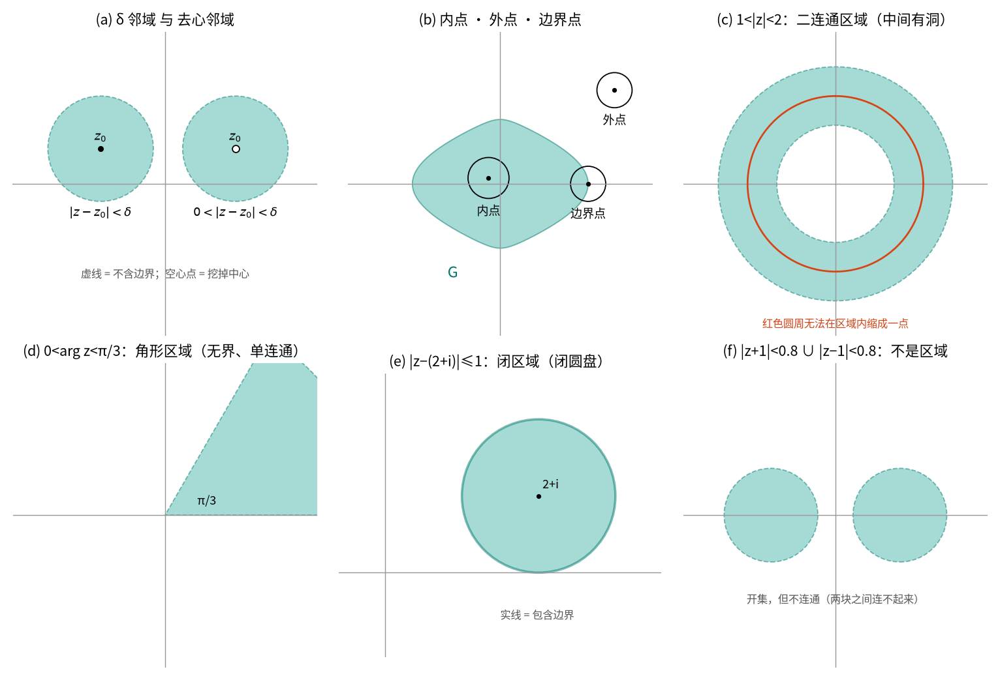
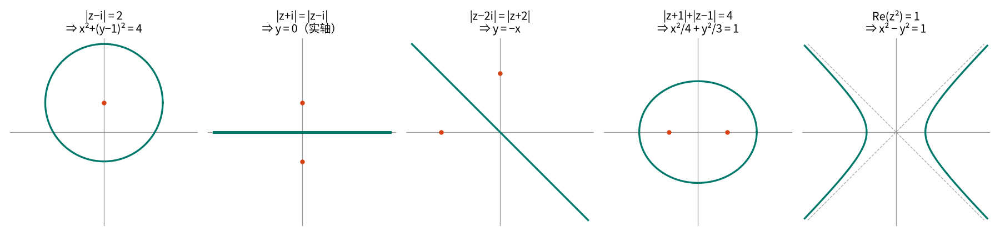
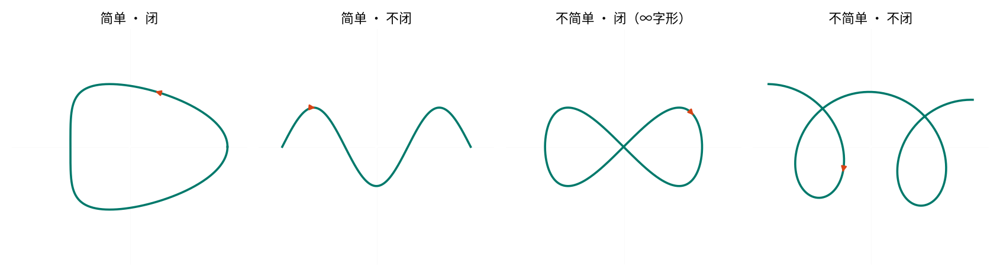
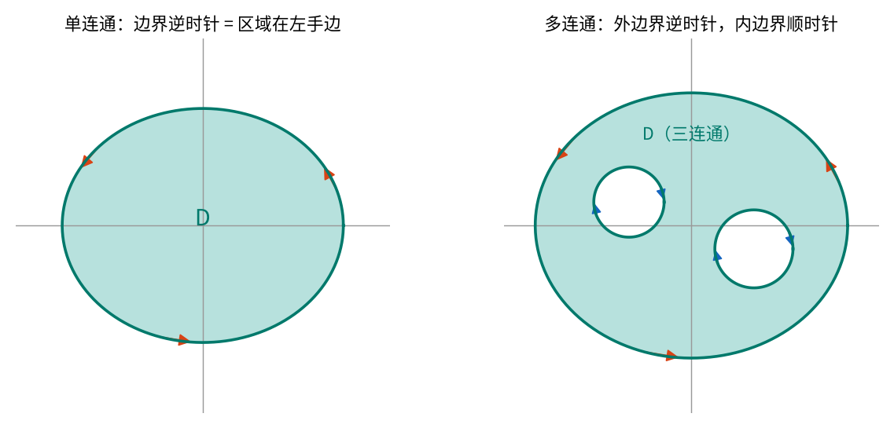

第 1 章 复数与复变函数¶
本章目标
- 把复数看成平面上的点 / 箭头，熟练在代数式、三角式、指数式之间转换，会按象限正确求主辐角 \(\arg z\)；
- 理解“乘法 = 模相乘 + 辐角相加”的几何意义，用它快速算乘幂（棣莫弗公式）和 \(n\) 次方根；
- 会用复数描述平面点集和曲线：邻域、开集、区域、单连通 / 多连通、简单闭曲线及其正向；
- 知道无穷远点 \(\infty\) 与复球面是什么；
- 理解复变函数 \(w=f(z)\) 就是 \(z\) 平面到 \(w\) 平面的映射，会拆成 \(u(x,y)+iv(x,y)\)，会判断极限是否存在、函数是否连续。
本章是全课的“地基”。它不难，但后面每一章都在反复使用这里的几何直觉：第 2 章的 C-R 方程来自“极限与方向无关”，第 3 章的柯西定理依赖“单连通”，第 5 章要用“无穷远点”，第 6 章的共形映射就是本章“映射”观点的延续。
附：虚数史话（选读）
- 1545 年，卡尔丹在《大术》中求“两数之和为 10、积为 40”，得到 \(5+\sqrt{-15}\) 与 \(5-\sqrt{-15}\)，称之为“虚构的量”。
- 1637 年，笛卡尔在《几何学》中把这种量称为“虚数”（imaginary）。
- 1722 年前后，棣莫弗（de Moivre）给出 \((\cos\theta+i\sin\theta)^n=\cos n\theta+i\sin n\theta\)；1748 年欧拉给出 \(e^{ix}=\cos x+i\sin x\)；1777 年欧拉首次用 \(i\) 表示 \(\sqrt{-1}\)。
- 1797–1799 年，高斯证明代数基本定理（\(n\) 次多项式在复数域恰有 \(n\) 个根），并给出复数的几何表示——复数从此“有了地方住”：平面。
- 19 世纪，柯西、黎曼、魏尔斯特拉斯奠定了复变函数论。
1.1 复数及其运算¶
1.1.1 复数的定义¶
设 \(x,y\) 是任意实数，形如
的数称为复数，其中 \(i\) 是虚数单位，满足 \(i^2=-1\)。
- \(x=\operatorname{Re} z\) 称为实部，\(y=\operatorname{Im} z\) 称为虚部（注意：虚部是实数 \(y\)，不是 \(iy\)）；
- \(x=0,\ y\neq 0\) 时 \(z=iy\) 称为纯虚数；\(y=0\) 时 \(z=x\) 就是实数——实数是复数的特例。
相等。 \(z_1=x_1+iy_1\) 与 \(z_2=x_2+iy_2\) 相等 \(\iff x_1=x_2\) 且 \(y_1=y_2\)。特别地 \(z=0 \iff x=y=0\)。
易错点：复数不能比较大小
两个（虚部不为零的）复数之间只有“相等 / 不相等”，没有大于小于。原因：如果能定义一个和加法、乘法相容的顺序，那么 \(i>0\) 或 \(i<0\) 必居其一；不论哪种，都有 \(i\cdot i>0\)，即 \(-1>0\)，矛盾。
所以 “\(z_1 < z_2\)” 是无意义的写法，但 \(|z_1|<|z_2|\)、\(\operatorname{Re}z_1<\operatorname{Re}z_2\) 都没问题（它们是实数）。
1.1.2 四则运算¶
设 \(z_1=x_1+iy_1,\ z_2=x_2+iy_2\)。
- 加减：实部虚部分别加减，\(z_1\pm z_2=(x_1\pm x_2)+i(y_1\pm y_2)\)。
-
乘法：按多项式展开，再用 \(i^2=-1\)：
\[z_1z_2=(x_1x_2-y_1y_2)+i(x_1y_2+x_2y_1).\] -
除法：若 \(z_2\neq 0\)，满足 \(z_2 z = z_1\) 的 \(z\) 称为商 \(z_1/z_2\)。计算时分子分母同乘分母的共轭（见 1.1.3）：
\[\frac{z_1}{z_2}=\frac{z_1\overline{z_2}}{z_2\overline{z_2}}=\frac{x_1x_2+y_1y_2}{x_2^2+y_2^2}+i\,\frac{x_2y_1-x_1y_2}{x_2^2+y_2^2}.\]
运算满足交换律、结合律、分配律，和实数完全一样。
例题 1.1
计算 \(\dfrac{(1+2i)(3-i)}{1+i}\)。
解。 先算分子：\((1+2i)(3-i)=3-i+6i-2i^2=3+5i+2=5+5i\)。 再除：\(\dfrac{5+5i}{1+i}=\dfrac{5(1+i)}{1+i}=5\)。
检查：结果是实数。这并不奇怪——后面学了“辐角相加减”就能一眼看出：\(\arg(1+2i)+\arg(3-i)=\arctan 2-\arctan\frac13=\frac{\pi}{4}=\arg(1+i)\)，辐角正好抵消。
1.1.3 共轭复数¶
\(z=x+iy\) 的共轭复数是 \(\bar z = x-iy\)。几何上：关于实轴的镜像。
关键公式：共轭的性质
口诀：共轭可以“穿过”加减乘除；乘以自己的共轭得到模的平方（一个非负实数）。
例题 1.2（教材例 1.1）
证明 \(z_1\overline{z_2}+\overline{z_1}z_2 = 2\operatorname{Re}(z_1\overline{z_2})\)。
证。 记 \(w=z_1\overline{z_2}\)，则 \(\bar w=\overline{z_1}\,\overline{\overline{z_2}}=\overline{z_1}z_2\)。于是左边 \(=w+\bar w=2\operatorname{Re}w=2\operatorname{Re}(z_1\overline{z_2})\)。\(\blacksquare\)
这个式子马上会用来证明三角不等式。
1.2 复数的几种表示¶
1.2.1 复平面：复数 = 点 = 向量¶
在平面上建立直角坐标系，让复数 \(z=x+iy\) 对应点 \((x,y)\)，全体复数就和平面上的点一一对应。这个平面称为复平面（\(z\) 平面），\(x\) 轴叫实轴，\(y\) 轴叫虚轴。
再进一步，把 \(z\) 看成从原点指向 \((x,y)\) 的向量。于是：
- 复数加减法 = 向量加减法（平行四边形法则 / 三角形法则）；
- \(z_1-z_2\) 是从 \(z_2\) 指向 \(z_1\) 的向量，\(|z_1-z_2|\) 就是两点间距离——这一点在描述圆、邻域时天天用。
直觉
以后看到“复数”，脑子里要同时出现三样东西：一个点、一根从原点出发的箭头、一对实数 \((x,y)\)。代数运算只是在操作这根箭头。
1.2.2 模与辐角¶
- 模：箭头的长度 \(|z|=r=\sqrt{x^2+y^2}\ \ (\ge 0)\)。
- 辐角：\(z\neq 0\) 时，箭头与正实轴的夹角 \(\theta\)（逆时针为正）称为辐角，记作 \(\operatorname{Arg} z\)。
辐角是多值的。 箭头转一整圈回到原处，所以辐角相互之间可以差 \(2k\pi\)：例如 \(z=-1+i\)，\(|z|=\sqrt2\)，
主辐角。 在所有辐角中取满足 \(-\pi<\theta_0\le\pi\) 的那一个，称为主辐角，记作 \(\arg z\)（小写）。于是
\(z=0\) 的模为 0，辐角无意义。
关键公式：按象限求主辐角
设 \(z=x+iy\neq 0\)，记 \(\alpha=\arctan\dfrac{y}{x}\in\left(-\dfrac{\pi}{2},\dfrac{\pi}{2}\right)\)：
| \(z\) 的位置 | \(\arg z\) |
|---|---|
| 第一、四象限及正实轴（\(x>0\)） | \(\alpha\) |
| 第二象限及负实轴（\(x<0,\ y\ge 0\)） | \(\alpha+\pi\) |
| 第三象限（\(x<0,\ y<0\)） | \(\alpha-\pi\) |
| 正虚轴（\(x=0,\ y>0\)） | \(\pi/2\) |
| 负虚轴（\(x=0,\ y<0\)） | \(-\pi/2\) |
易错点：\(\arg z \ne \arctan(y/x)\)
\(\arctan\) 的值域只有 \((-\pi/2,\pi/2)\)，只能覆盖右半平面。\(z=-1-i\) 和 \(z=1+i\) 的 \(y/x\) 都是 1，但前者 \(\arg z=-\frac{3\pi}{4}\)，后者 \(\frac{\pi}{4}\)。先画图看象限，再套公式——这是本章丢分最多的地方。
例题 1.3
求 \(z=\dfrac{2i}{1-i}+\dfrac{2(1-i)}{i}\) 的模与主辐角。
解。 先化成代数式：
所以 \(z=-3-i\)，位于第三象限。
1.2.3 三角式与指数式¶
由 \(x=r\cos\theta,\ y=r\sin\theta\) 得到三角表示式
再利用欧拉公式
得到指数表示式 \(z=re^{i\theta}\)。这里 \(\theta\) 可以取任意一个辐角，习惯上取主辐角。
为什么 \(e^{i\theta}=\cos\theta+i\sin\theta\)？（两个角度的直觉）
- 级数角度：把 \(x=i\theta\) 代入 \(e^x=1+x+\frac{x^2}{2!}+\frac{x^3}{3!}+\cdots\)，利用 \(i^2=-1,\ i^3=-i,\ i^4=1\)，偶次项凑成 \(\cos\theta\) 的级数，奇次项凑成 \(i\sin\theta\) 的级数。（第 2 章会把 \(e^z\) 正式定义出来，第 4 章会严格讲级数。）
- 运动角度：\(\frac{d}{d\theta}e^{i\theta}=ie^{i\theta}\)——“速度 = 位置乘以 \(i\)” = 速度方向永远垂直于位置向量、长度相同。这正是单位圆上的匀速圆周运动，\(\theta\) 就是转过的弧长。
在电路课里，相量 \(\dot U=Ue^{j\varphi}\) 用的就是这个式子。
例题 1.4
把 \(z=-\sqrt{12}-2i\) 化为三角式和指数式。
解。 \(|z|=\sqrt{12+4}=4\)。\(z\) 在第三象限，
故 \(z=4\left[\cos\left(-\frac{5\pi}{6}\right)+i\sin\left(-\frac{5\pi}{6}\right)\right]=4e^{-\frac{5\pi}{6}i}\)。
（写成 \(4e^{\frac{7\pi}{6}i}\) 也对——它们只差 \(2\pi\)；但若题目要求“主辐角”，必须是 \(-\frac{5\pi}{6}\)。）
常用的“简单”复数的指数形式（建议背熟，画在单位圆上记）：
1.2.4 乘法与除法的几何意义：旋转 + 伸缩¶
设 \(z_1=r_1e^{i\theta_1},\ z_2=r_2e^{i\theta_2}\)，由指数运算法则：
关键公式：乘除 = 模乘除 + 辐角加减
即
几何意义：乘以 \(z_2\) = 把箭头 \(z_1\) 逆时针转 \(\theta_2\)，再把长度乘 \(r_2\)。 特别地，乘以 \(i=e^{i\pi/2}\) 就是逆时针转 \(90^\circ\)；\(i^2=-1\) 就是“转两次 \(90^\circ\) = 掉头”。下面的动画把这一点演示出来：
易错点：辐角等式是“集合意义下”的
\(\operatorname{Arg}(z_1z_2)=\operatorname{Arg}z_1+\operatorname{Arg}z_2\) 的意思是：从左右两个集合里各取一个元素相加，得到的仍在左边集合中；反之亦然。它对主辐角不成立：\(z_1=z_2=-1\) 时 \(\arg z_1+\arg z_2=2\pi\)，而 \(\arg(z_1z_2)=\arg 1=0\)。
同理，\(\operatorname{Arg}(z^2)\ne 2\operatorname{Arg}z\)（作为集合）：前者是 \(2\arg z+2k\pi\)，后者是 \(2\arg z+4k\pi\)，后者“少了一半”。
例题 1.5
计算 \(\dfrac{i}{1-i}\)。
解（指数式）。 \(i=e^{\frac{\pi}{2}i}\)，\(1-i=\sqrt2e^{-\frac{\pi}{4}i}\)，所以
（用代数式验证：\(\frac{i(1+i)}{2}=\frac{-1+i}{2}\)。✓）
1.2.5 乘幂：棣莫弗公式¶
\(n\) 个 \(z\) 相乘记为 \(z^n\)。由乘法规则立即得到：
关键公式：棣莫弗（de Moivre）公式
规定 \(z^{-n}=1/z^n\) 后，对负整数 \(n\) 也成立。模乘方，辐角乘 \(n\)。
例题 1.6
(1) 计算 \((1+i)^{10}\)；(2) 计算 \(\left(\frac12+\frac{\sqrt3}{2}i\right)^3\)；(3) 用棣莫弗公式推出 \(\cos3\theta\) 的表达式。
解。 (1) \(1+i=\sqrt2e^{\frac{\pi}{4}i}\)，\((1+i)^{10}=(\sqrt2)^{10}e^{\frac{10\pi}{4}i}=32e^{\frac{5\pi}{2}i}=32e^{\frac{\pi}{2}i}=32i\)。
(2) \(\frac12+\frac{\sqrt3}{2}i=e^{\frac{\pi}{3}i}\)，立方得 \(e^{\pi i}=-1\)。同理 \(\left(\frac12-\frac{\sqrt3}{2}i\right)^3=e^{-\pi i}=-1\)，而 \((-1)^3=-1\)。也就是说 \(-1\) 有三个立方根——这引出了方根。
(3) \((\cos\theta+i\sin\theta)^3=\cos3\theta+i\sin3\theta\)。左边按二项式展开，取实部：
这就是“用复数推三角恒等式”的标准套路，比记公式可靠。
1.2.6 方根：\(n\) 个根均匀分布在圆周上¶
求所有满足 \(w^n=z\) 的复数 \(w\)，称为求 \(z\) 的 \(n\) 次方根，记作 \(w=\sqrt[n]{z}\) 或 \(z^{1/n}\)。
推导。 设 \(z=re^{i\theta}\)，\(w=\rho e^{i\varphi}\)。由 \(w^n=\rho^ne^{in\varphi}=re^{i\theta}\)：
- 模相等：\(\rho^n=r \Rightarrow \rho=\sqrt[n]{r}\)（正实数的算术根）；
- 辐角相差 \(2k\pi\)（而不是必须相等！）：\(n\varphi=\theta+2k\pi\Rightarrow \varphi=\dfrac{\theta+2k\pi}{n}\)。
关键公式：\(n\) 次方根
\(k\) 取 \(n,n+1,\dots\) 时又重复回来，所以恰好 \(n\) 个不同的根。它们均匀分布在以原点为圆心、半径 \(\sqrt[n]{r}\) 的圆周上，相邻两根夹角 \(\frac{2\pi}{n}\)，构成正 \(n\) 边形的顶点。
两种求法： ① 直接套公式；② 先找到一个容易的根 \(w_0\)，其余的根 = \(w_0\) 依次乘以 \(e^{2\pi i/n}\)（转 \(\frac{2\pi}{n}\)）。
例题 1.7
(1) 求 \(\sqrt[3]{-8}\)；(2) 解方程 \(z^3-1=0\)。
解。 (1) \(-8=8e^{\pi i}\)，所以 \(\sqrt[3]{-8}=2e^{i\frac{\pi+2k\pi}{3}},\ k=0,1,2\)：
(2) \(z^3=1=e^{0i}\)，\(z=e^{\frac{2k\pi}{3}i}\)：\(\ 1,\ \ -\frac12+\frac{\sqrt3}{2}i,\ \ -\frac12-\frac{\sqrt3}{2}i\)。
（方法②：显然 \(-2\) 是 \(\sqrt[3]{-8}\) 的一个根，乘以 \(e^{\pm\frac{2\pi}{3}i}\) 得另外两个。）
易错点
- 实数范围里 \(\sqrt[3]{-8}=-2\) 只有一个；复数范围里有三个。考试题“求 \(\sqrt[n]{z}\)”必须写出全部 \(n\) 个。
- 单位根有个漂亮性质：\(\sum_{k=0}^{n-1}e^{2k\pi i/n}=0\)（\(n\ge2\)）——正多边形的顶点向量之和为零。DFT 的正交性就来自它。
前后联系
动画最后一段演示了：\(z\) 沿圆周绕原点一整圈，\(\sqrt[3]{z}\) 只转了 \(\frac{1}{3}\) 圈，从一个根“滑”到了另一个根。这就是为什么第 2 章讲 \(\sqrt[n]{z}\)、\(\operatorname{Ln}z\) 时，必须在平面上“剪一刀”（支割线）才能得到单值的分支。
1.2.7 几个常用关系（不等式）¶
关键公式
- \(|\operatorname{Re}z|\le|z|,\quad |\operatorname{Im}z|\le|z|,\quad |z|\le|\operatorname{Re}z|+|\operatorname{Im}z|\)；
- 三角不等式：\(\big||z_1|-|z_2|\big|\le|z_1\pm z_2|\le|z_1|+|z_2|\)；
- \(|\bar z|=|z|\)，\(\arg\bar z=-\arg z\)（\(z\) 不在负实轴和原点上），\(|z|^2=z\bar z\)。
三角不等式的证明（复数证明不等式的标准手法：先平方，化成共轭）：
几何意义：三角形两边之和不小于第三边（\(z_1,\ z_2,\ z_1+z_2\) 构成三角形的三条边）。
1.3 平面点集的一般概念¶
复变函数的定义域通常是“区域”。这一节把高数里学过的平面点集概念用复数语言重新说一遍，并引入后面最重要的两个概念：单连通与闭曲线的正向。
1.3.1 邻域、内点、开集¶
- \(\delta\) 邻域：\(\{z:|z-z_0|<\delta\}\)——以 \(z_0\) 为圆心、\(\delta\) 为半径的开圆盘。
- 去心邻域：\(\{z:0<|z-z_0|<\delta\}\)——挖掉圆心。（极限、孤立奇点都在去心邻域上讨论。）
对点集 \(G\) 和点 \(z_0\)：
- 内点：\(z_0\in G\)，且存在一个邻域完全含于 \(G\)；
- 外点：\(z_0\notin G\)，且存在一个邻域与 \(G\) 完全不相交；
- 边界点：\(z_0\) 的任意邻域中既有 \(G\) 的点、又有不属于 \(G\) 的点（\(z_0\) 本身可以属于也可以不属于 \(G\)）。所有边界点组成 \(G\) 的边界。
开集：每个点都是内点；闭集：边界点全都属于它。有界集：能被某个以原点为圆心的圆盘包住。

1.3.2 区域¶
定义：区域
平面点集 \(D\) 称为区域，如果
- \(D\) 是开集；
- \(D\) 是连通的：\(D\) 中任何两点都可以用一条完全属于 \(D\) 的折线连起来。
区域连同它的边界称为闭区域，记作 \(\overline D\)。
一句话：区域 = 连通的开集。
简单闭曲线与内外部。 一条不自交的闭曲线（见 1.3.4）把整个平面分成两个区域（若尔当定理）：有界的叫内部，无界的叫外部。
定义：单连通域 / 多连通域
区域 \(D\) 称为单连通域，如果 \(D\) 内任意一条简单闭曲线的内部仍全部属于 \(D\)；否则称为多连通域。
直观地说：单连通 = 没有洞；区域内任意一个橡皮筋圈都能在区域里收缩成一点。圆环 \(1<|z|<2\) 中间有洞，绕洞一圈的圆周收缩不了，所以是二连通域；挖掉两个洞就是三连通域。
前后联系
“单连通”是第 3 章柯西积分定理的前提：在单连通域内解析的函数，沿任意闭曲线积分为 0。一旦区域有洞（多连通），积分就可能不为 0——第 5 章的留数正是在“数洞里有什么”。
例题 1.8：描述下列点集
| 不等式 | 几何意义 | 类型 |
|---|---|---|
| \(\operatorname{Re}z>0\) | 右半平面 | 区域，无界，单连通 |
| \(\lvert z-(2+i)\rvert\le1\) | 以 \(2+i\) 为心、半径 1 的闭圆盘 | 闭区域，有界 |
| \(0<\arg z<\frac{\pi}{3}\) | 从原点出发、夹角 \(\frac{\pi}{3}\) 的角形 | 区域，无界，单连通 |
| \(1<\lvert z\rvert<2\) | 圆环 | 区域，有界，二连通 |
| \(0<\lvert z-1\rvert<2\) | 去心圆盘 | 区域，有界，二连通（挖掉一个点也算洞！） |
易错点
- 挖掉一个点也算一个“洞”：\(0<|z|<1\) 是二连通域。绕原点的小圆周无法在区域内收缩成一点（会碰到被挖掉的原点）。
- 区域必须是开集，所以 \(|z|\le1\) 不是区域（是闭区域）；两个不相交的圆盘之并不连通，也不是区域。
1.3.3 平面曲线的复数方程¶
同一条曲线，可以用直角坐标方程 \(F(x,y)=0\) 描述，也可以用复数方程 \(f(z)=0\) 描述。互相转换的桥梁是
- 理解方程（\(f(z)=0\to F(x,y)=0\)）：把 \(z=x+iy\) 代进去，或者直接用几何意义（\(|z-a|\) 是到 \(a\) 的距离）；
- 建立方程（\(F(x,y)=0\to f(z)=0\)）：把 \(x,y\) 换成 \(z,\bar z\)。
例题 1.9：下列方程表示什么曲线？
- \(|z-i|=2\)：到 \(i\) 距离为 2 ⇒ 圆 \(x^2+(y-1)^2=4\)。
- \(|z+i|=|z-i|\)：到 \(-i\) 和 \(i\) 距离相等 ⇒ 两点连线的垂直平分线，即实轴 \(y=0\)。
- \(|z-2i|=|z+2|\)：到 \(2i\) 与 \(-2\) 等距 ⇒ 垂直平分线 \(y=-x\)。
- \(|z+1|+|z-1|=4\)：到两焦点 \(\pm1\) 距离之和为 4 ⇒ 椭圆，\(a=2,\ c=1,\ b^2=3\)：\(\dfrac{x^2}{4}+\dfrac{y^2}{3}=1\)。
- \(\operatorname{Re}(z^2)=1\)：\(z^2=(x^2-y^2)+2xyi\) ⇒ 双曲线 \(x^2-y^2=1\)。

技巧：看到 \(|z-a|\) 立刻想“到 \(a\) 的距离”，大多数题不用代入 \(x,y\) 就能看出答案。
关键公式：圆的复数方程（第 6 章要用）
以 \(z_0\) 为心、\(R\) 为半径的圆：\(|z-z_0|=R\)，展开 \((z-z_0)(\bar z-\bar z_0)=R^2\) 得
一般地，\(Az\bar z+\bar\beta z+\beta\bar z+C=0\)（\(A,C\) 为实数）在 \(A\ne0\) 时表示圆，\(A=0\) 时表示直线。第 6 章“分式线性映射把圆映成圆”就是用这个统一形式证明的。
1.3.4 参数方程与曲线分类¶
直角坐标下的参数方程 \(x=x(t),\ y=y(t)\ (\alpha\le t\le\beta)\)，写成复数形式就是一个式子：
两个最常用的参数方程（第 3 章算复积分时每题都要用）：
- 圆周 \(|z-z_0|=R\)：\(z=z_0+Re^{i\theta},\ 0\le\theta\le2\pi\)（逆时针一圈）；
- 线段 从 \(z_1\) 到 \(z_2\)：\(z=z_1+t(z_2-z_1),\ 0\le t\le1\)。
曲线的分类。 设 \(C:\ z=z(t),\ t\in[\alpha,\beta]\)。
- 简单曲线（若尔当曲线）：不自交——除端点外，\(t_1\ne t_2\) 时 \(z(t_1)\ne z(t_2)\)；
- 简单闭曲线：简单曲线且 \(z(\alpha)=z(\beta)\)；
- 光滑曲线：\(x'(t),\ y'(t)\) 连续且 \(z'(t)\ne0\)（处处有切线、切线连续转动）；由有限段光滑曲线连成的称为分段光滑曲线（例如多边形边界）。

1.3.5 有向曲线与正向¶
给曲线指定一个方向就成为有向曲线 \(C\)；反方向的曲线记作 \(C^-\)。
约定：正向 = 区域在左手边
- 简单闭曲线的正向：逆时针——沿着曲线走，它所围的有界区域始终在左边。
- 区域边界的正向：沿边界走时，区域始终在左边。对多连通域来说：外边界逆时针，内边界顺时针。

前后联系
第 3 章复合闭路定理：\(\oint_{\Gamma}f\,dz=0\)，其中 \(\Gamma\) 是多连通域的全部边界、取上面约定的正向。把内边界的方向翻过来，就得到常用形式 \(\oint_{C}f\,dz=\sum_k\oint_{C_k}f\,dz\)（全部逆时针）。方向搞错，答案差一个负号。
1.4 无穷大与复球面¶
1.4.1 复数 \(\infty\)¶
在复数中引入一个特殊的“数” \(\infty\)（无穷大），规定（\(z\) 为有限复数）：
而 \(\infty\pm\infty\)、\(0\cdot\infty\)、\(\dfrac{\infty}{\infty}\)、\(\dfrac00\) 没有意义。\(\infty\) 的实部、虚部、辐角都没有意义，规定 \(|\infty|=+\infty\)。
易错点：复数只有一个 \(\infty\)
实数轴有 \(+\infty\) 和 \(-\infty\) 两“端”，但复平面只有一个无穷远点 \(\infty\)，不分方向：不论沿哪个方向跑到无穷远，都到达同一个点。所以不能写 \(+\infty\)、\(-\infty\)、\(i\infty\) 这样的复数。
1.4.2 复球面（黎曼球面）¶
\(\infty\) 对应平面上的哪个点？平面上找不到它，黎曼给出了一个漂亮的几何解释：
让一个球面与复平面相切于原点（切点 \(S\) 叫南极，对面的点 \(N\) 叫北极）。对平面上任一点 \(z\)，连接 \(z\) 与 \(N\) 的直线交球面于唯一一点 \(P\)。这样：
- 平面上的点 \(\longleftrightarrow\) 球面上除 \(N\) 以外的点，一一对应（这叫球极投影）；
- \(|z|\) 越大，\(P\) 越靠近 \(N\)；于是自然地把 \(N\) 对应到 \(\infty\)。
这个球面叫复球面。添加了 \(\infty\) 的平面 \(\mathbb C\cup\{\infty\}\) 称为扩充复平面（与复球面一一对应）；不含 \(\infty\) 的叫有限复平面，或简称复平面。
球极投影的坐标公式（选读）
取单位球 \(x_1^2+x_2^2+x_3^2=1\)，北极 \(N=(0,0,1)\)，复平面取为赤道平面 \(x_3=0\)（与“相切于南极”的版本只差一个平移和缩放，几何本质相同）。则球面点 \((x_1,x_2,x_3)\ne N\) 对应
可以验证 \(|z|\to\infty\) 时 \((x_1,x_2,x_3)\to(0,0,1)=N\)。
1.4.3 无穷远点的邻域¶
定义
设 \(M>0\)。满足 \(|z|>M\) 的点（包括 \(\infty\)）组成 \(\infty\) 的邻域；不包括 \(\infty\) 时称为去心邻域，记作 \(M<|z|<+\infty\)。
在复球面上看，它就是北极 \(N\) 周围的一顶小球冠——和有限点的邻域“长得一样”。
前后联系
- 第 5 章会讨论 \(\infty\) 作为孤立奇点、以及在 \(\infty\) 处的留数（用于“所有留数之和为零”的技巧）。
- 第 6 章分式线性映射 \(w=\dfrac{az+b}{cz+d}\) 把 \(z=-\frac{d}{c}\) 映到 \(\infty\)、把 \(\infty\) 映到 \(\frac{a}{c}\)，在扩充复平面上才是一一映射；“直线 = 过 \(\infty\) 的圆”也只有在复球面上才说得通。
1.5 复变函数¶
1.5.1 定义：一个复变函数 = 两个二元实函数¶
定义
设 \(D\) 是复平面上的点集。若对 \(D\) 中每一点 \(z\)，按某个法则有确定的复数 \(w\) 与之对应，则称在 \(D\) 上定义了一个复变函数 \(w=f(z)\)。\(D\) 称为定义域（以后通常是一个区域）。
- 单值函数：每个 \(z\) 只对应一个 \(w\)，如 \(w=z^2\)；
- 多值函数：一个 \(z\) 对应多个 \(w\)，如 \(w=\sqrt[3]{z}\)、\(w=\operatorname{Arg}z\)。
今后不特别说明时，“函数”都指单值函数。
记 \(z=x+iy\)，\(w=u+iv\)，则
所以一个复变函数等价于一对二元实函数 \(u=u(x,y),\ v=v(x,y)\)。这是把复变问题转化成高数问题的基本手段（第 2 章 C-R 方程、第 3 章复积分都从这里出发）。
例题 1.10
将 (1) \(w=z^2+1\)；(2) \(w=\dfrac1z\) 化为一对实函数。
解。 (1) \(u+iv=(x+iy)^2+1=(x^2-y^2+1)+i\,2xy\)，所以 \(u=x^2-y^2+1,\ v=2xy\)。
(2) \(\dfrac1z=\dfrac{\bar z}{|z|^2}=\dfrac{x-iy}{x^2+y^2}\)，所以 \(u=\dfrac{x}{x^2+y^2},\ v=\dfrac{-y}{x^2+y^2}\)。
反过来，已知 \(u,v\) 想写回 \(f(z)\)：令 \(y=0\)（即 \(z=x\)）先得到 \(f(x)\)，再把 \(x\) 换成 \(z\)——第 2 章“构造解析函数”题会用到这个技巧。
1.5.2 几何表示：映射¶
实函数 \(y=f(x)\) 可以画成平面上的曲线；但复变函数的自变量、因变量各要两个实数，“图像”需要四维空间，画不出来。
解决办法：取两张平面——\(z\) 平面和 \(w\) 平面，把 \(w=f(z)\) 看成把 \(z\) 平面上的点集 \(S\) 变成 \(w\) 平面上点集 \(S^*\) 的映射（变换）。\(S^*\) 称为 \(S\) 的像，\(S\) 称为 \(S^*\) 的原像。
函数（分析）、映射（几何）、变换（代数）在这里是同一个概念的三种叫法。
几个最简单的映射，用 1.2 节的几何意义一眼就能看懂：
| 映射 | 几何作用 |
|---|---|
| \(w=z+b\) | 平移 |
| \(w=e^{i\alpha}z\) | 绕原点旋转角 \(\alpha\) |
| \(w=az\ (a=\lvert a\rvert e^{i\alpha})\) | 旋转 \(\alpha\) + 伸缩 \(\lvert a\rvert\) 倍 |
| \(w=\bar z\) | 关于实轴反射 |
| \(w=z^2\) | 模平方、辐角加倍：角形区域张角变成两倍 |
| \(w=\dfrac1z\) | 模取倒数、辐角取反（第 6 章重点） |
例题 1.11（教材 P19）
已知映射 \(w=z^2\)，求：(1) 点 \(z=\frac12+\frac12i\) 的像；(2) 区域 \(D=\{z:\operatorname{Im}z>0,\ \operatorname{Re}z>0,\ |z|<1\}\) 的像。
解。 (1) \(w=\left(\frac12+\frac12 i\right)^2=\frac14+\frac12i-\frac14=\frac12 i\)。
(2) \(D\) 是第一象限内的四分之一单位圆盘：\(D=\{z:0<|z|<1,\ 0<\arg z<\frac{\pi}{2}\}\)。令 \(z=re^{i\theta}\)，则 \(w=r^2e^{2i\theta}\)：模 \(r^2\in(0,1)\)，辐角 \(2\theta\in(0,\pi)\)。所以像是上半单位圆盘
方法要点：涉及角形、扇形区域时用极坐标，\(w=z^n\) 的作用就是“半径 \(n\) 次方、张角乘 \(n\)”。
反函数与一一映射。 若 \(w=f(z)\) 的定义域为 \(D\)、值域为 \(G\)，则 \(G\) 中每个 \(w\) 对应 \(D\) 中一个（或几个）\(z\)，由此确定的函数 \(z=\varphi(w)\) 称为反函数（逆映射）。若 \(f\) 与其逆映射都单值，则称 \(f\) 是一一映射（双方单值）。
例如 \(w=z^2\) 在整个平面上不是一一映射（\(z\) 与 \(-z\) 映到同一点），但限制在上半平面 \(\operatorname{Im}z>0\) 上就是一一映射（像为去掉正实轴的平面）。
1.5.3 极限¶
定义（教材定义 1.1）
设 \(f(z)\) 在 \(z_0\) 的去心邻域 \(0<|z-z_0|<\rho\) 内有定义。若存在复数 \(A\)，对任意 \(\varepsilon>0\)，存在 \(\delta>0\)，使得当 \(0<|z-z_0|<\delta\) 时有 \(|f(z)-A|<\varepsilon\)，则称 \(A\) 为 \(z\to z_0\) 时 \(f(z)\) 的极限，记作 \(\lim\limits_{z\to z_0}f(z)=A\)。
形式上和一元实函数一模一样，但有本质区别：
关键区别：\(z\to z_0\) 的方式是任意的
实数 \(x\to x_0\) 只能从左右两边来；而 \(z\to z_0\) 可以沿任何方向、任何曲线（直线、螺线……）。极限存在要求所有方式都趋于同一个 \(A\)。
因此证明极限不存在的标准方法是：找两条路径，得到不同的值。（\(f(z_0)\) 本身有没有定义无关紧要。）
定理 1.1：复极限 ⇔ 实部虚部的二元极限
设 \(f(z)=u(x,y)+iv(x,y)\)，\(A=u_0+iv_0\)，\(z_0=x_0+iy_0\)，则
（证明思路：\(|u-u_0|,\ |v-v_0|\le|f-A|\le|u-u_0|+|v-v_0|\)。）
极限的四则运算与实函数相同：若 \(\lim f=A,\ \lim g=B\)，则 \(\lim(f\pm g)=A\pm B\)，\(\lim fg=AB\)，\(\lim f/g=A/B\ (B\ne0)\)。
例题 1.12（教材例 1.15）
讨论 \(f(z)=\dfrac{z}{\bar z}\) 当 \(z\to0\) 时的极限。
解法一（化为 \(u,v\)）。 \(f(z)=\dfrac{z^2}{z\bar z}=\dfrac{(x^2-y^2)+2xyi}{x^2+y^2}\)，\(u=\dfrac{x^2-y^2}{x^2+y^2}\)。沿 \(y=0,\ x\to0\)：\(u\to1\)；沿 \(x=0,\ y\to0\)：\(u\to-1\)。\(u\) 的极限不存在，由定理 1.1，\(f\) 的极限不存在。
解法二（直接取路径）。 \(f(z)=\dfrac{x+iy}{x-iy}\)。沿实轴 \(f\equiv1\)，沿虚轴 \(f\equiv-1\)，不同 ⇒ 极限不存在。
解法三（极坐标）。 沿射线 \(z=re^{i\theta}\)（\(r\to0^+\)）：\(f(z)=\dfrac{re^{i\theta}}{re^{-i\theta}}=e^{2i\theta}\)，与 \(\theta\) 有关 ⇒ 极限不存在。
前后联系
“极限必须与方向无关”是第 2 章的核心：复导数 \(f'(z_0)=\lim\limits_{\Delta z\to0}\frac{f(z_0+\Delta z)-f(z_0)}{\Delta z}\) 要求沿实轴方向和沿虚轴方向算出来一样，C-R 方程就是这么推出来的。而 \(\bar z\) 恰恰在这里“出局”：\(\frac{\overline{\Delta z}}{\Delta z}\) 就是上面这个极限不存在的 \(f\)——所以 \(\bar z\) 处处不可导。
1.5.4 连续¶
定义（教材定义 1.2）
若 \(\lim\limits_{z\to z_0}f(z)=f(z_0)\)，则称 \(f(z)\) 在 \(z_0\) 连续；在区域 \(D\) 内处处连续，则称在 \(D\) 内连续。
三要素：\(f(z_0)\) 有定义；极限存在；二者相等。等价说法：\(\lim\limits_{\Delta z\to0}\Delta w=0\)，即“自变量充分接近时，函数值充分接近”。
由定理 1.1：\(f=u+iv\) 在 \(z_0\) 连续 \(\iff\) \(u,v\) 都在 \((x_0,y_0)\) 连续。
连续函数的性质：
- 连续函数的和、差、积、商（分母不为零）连续；
- 连续函数的复合连续。由此：多项式处处连续，有理函数在分母不为零处连续；
- 在有界闭区域 \(\overline D\) 上连续的函数：\(|f(z)|\) 有界、能取到最大值和最小值，且 \(f\) 一致连续。
例题 1.13
讨论 (1) \(f(z)=|z|^2\)；(2) \(f(z)=\arg z\) 的连续性。
解。 (1) \(f=x^2+y^2+0\cdot i\)，\(u=x^2+y^2,\ v=0\) 处处连续，所以 \(|z|^2\) 在整个复平面连续。
(也可直接估计：\(\big||z+\Delta z|^2-|z|^2\big|=|z\overline{\Delta z}+\bar z\Delta z+|\Delta z|^2|\le2|z||\Delta z|+|\Delta z|^2\to0\)。)
(2) 原点：\(\arg 0\) 无定义，不连续。负实轴上一点 \(z_0=-x_0\ (x_0>0)\)：\(\arg z_0=\pi\)；从上半平面趋近时 \(\arg z\to\pi\)，从下半平面趋近时 \(\arg z\to-\pi\)，极限不存在，不连续。其它点都连续（教材例 1.16）。
所以 \(\arg z\) 在“去掉原点和负实轴”的区域上连续。这条被去掉的负实轴，就是第 2 章对数函数 \(\ln z\) 的支割线。
知识点归纳总结¶
知识点归纳总结
一张图：本章各概念如何连起来
flowchart TD
Z["复数 z = x + iy"] --> P["复平面：点 / 向量"]
P --> MA["模 |z| 与辐角 Arg z<br/>主辐角 arg z ∈ (−π, π]"]
MA --> EX["三角式 r(cosθ + i sinθ)<br/>指数式 r e^{iθ}"]
EX --> MUL["乘除 = 模乘除、辐角加减<br/>（旋转 + 伸缩）"]
MUL --> POW["乘幂：棣莫弗 zⁿ = rⁿ e^{inθ}"]
POW --> ROOT["方根：n 个根均布在圆上<br/>→ 多值性"]
P --> SET["点集：邻域、开集、区域<br/>单连通 / 多连通"]
SET --> CUR["曲线：参数式 z(t)、简单闭曲线<br/>正向 = 区域在左"]
P --> INF["无穷远点 ∞、复球面"]
Z --> FUN["复变函数 w = f(z) = u + iv<br/>= 平面到平面的映射"]
FUN --> LIM["极限：方向任意<br/>⇔ u、v 的二元极限"]
LIM --> CONT["连续"]
ROOT -.第2章.-> BR["支割线、多值函数的分支"]
LIM -.第2章.-> CR["复导数、C-R 方程"]
SET -.第3章.-> CAU["柯西积分定理"]
INF -.第5/6章.-> RES["∞ 处留数、分式线性映射"]必背公式
| 内容 | 公式 |
|---|---|
| 共轭 | \(z\bar z=\lvert z\rvert^2\)，\(\operatorname{Re}z=\frac{z+\bar z}{2}\)，\(\operatorname{Im}z=\frac{z-\bar z}{2i}\) |
| 欧拉公式 | \(e^{i\theta}=\cos\theta+i\sin\theta\) |
| 乘除 | \(\lvert z_1z_2\rvert=\lvert z_1\rvert\lvert z_2\rvert\)，\(\operatorname{Arg}(z_1z_2)=\operatorname{Arg}z_1+\operatorname{Arg}z_2\)（集合意义） |
| 乘幂 | \(z^n=r^ne^{in\theta}\) |
| 方根 | \(\sqrt[n]{z}=\sqrt[n]{r}\,e^{i(\theta+2k\pi)/n},\ k=0,\dots,n-1\) |
| 三角不等式 | \(\big\lvert\lvert z_1\rvert-\lvert z_2\rvert\big\rvert\le\lvert z_1\pm z_2\rvert\le\lvert z_1\rvert+\lvert z_2\rvert\) |
| 圆周参数式 | \(z=z_0+Re^{i\theta},\ 0\le\theta\le2\pi\) |
| 线段参数式 | \(z=z_1+t(z_2-z_1),\ 0\le t\le1\) |
方法清单
- 求主辐角：先画图定象限，再用 \(\arctan\frac{y}{x}\) 加减 \(\pi\)。
- 算乘方、开方、连乘除：一律化指数式；算加减：用代数式。
- 化简分式：分子分母同乘分母的共轭。
- 证明复数等式 / 不等式：\(|z|^2=z\bar z\)，展开后用 \(w+\bar w=2\operatorname{Re}w\le2|w|\)。
- 识别曲线 / 区域：\(|z-a|\) = 到 \(a\) 的距离；角形区域用 \(\arg\)；必要时代入 \(z=x+iy\)。
- 求映射的像：\(w=z^n\) 用极坐标（模 \(n\) 次方、辐角 \(\times n\)）；一般函数拆 \(u,v\) 消去参数。
- 证明极限不存在：找两条路径（实轴 / 虚轴 / 射线 \(z=re^{i\theta}\)）得到不同的值。
本章易错点汇总
- 复数不能比较大小；
- \(\arg z\ne\arctan\frac{y}{x}\)（第二、三象限要 \(\pm\pi\)）；主辐角范围是 \((-\pi,\pi]\)，不是 \([0,2\pi)\)；
- \(\operatorname{Arg}(z_1z_2)=\operatorname{Arg}z_1+\operatorname{Arg}z_2\) 对主辐角 \(\arg\) 不一定成立；
- \(n\) 次方根有 \(n\) 个，必须写全；
- 挖掉一个点的区域是多连通的；
- 多连通域边界的正向：外逆内顺；
- 复平面只有一个 \(\infty\)；
- 复极限要求“任意方向”，路径只验证几条不能证明极限存在，只能证明不存在。
练习题¶
练习 1
求 \(z=\dfrac{1+i}{1-i}\) 的实部、虚部、模和主辐角，并计算 \(z^{2026}\)。
解答
\(z=\dfrac{(1+i)^2}{(1-i)(1+i)}=\dfrac{2i}{2}=i\)。所以 \(\operatorname{Re}z=0,\ \operatorname{Im}z=1,\ |z|=1,\ \arg z=\frac{\pi}{2}\)。
\(z^{2026}=i^{2026}=i^{4\times506+2}=i^2=-1\)。
练习 2
计算 \(\left(-1+\sqrt3 i\right)^{6}\) 和 \(\left(\dfrac{1+\sqrt3i}{1-i}\right)^{4}\)。
解答
\(-1+\sqrt3i=2e^{\frac{2\pi}{3}i}\)（第二象限：\(\arctan(-\sqrt3)+\pi=\frac{2\pi}{3}\)），六次方 \(=64e^{4\pi i}=64\)。
\(1+\sqrt3i=2e^{\frac{\pi}{3}i}\)，\(1-i=\sqrt2e^{-\frac{\pi}{4}i}\)，商 \(=\sqrt2e^{\frac{7\pi}{12}i}\)，四次方 \(=4e^{\frac{7\pi}{3}i}=4e^{\frac{\pi}{3}i}=2+2\sqrt3i\)。
练习 3
解方程 \(z^4+16=0\)，并在复平面上画出所有根。
解答
\(z^4=-16=16e^{\pi i}\)，\(z=2e^{i\frac{\pi+2k\pi}{4}},\ k=0,1,2,3\)：
四个根是半径 2 的圆上一个正方形的顶点，分别位于四个象限的角平分线上。
练习 4
指出下列点集的几何意义，并判断是否为区域、是否有界、单连通还是多连通：
(1) \(0<\operatorname{Re}(iz)<1\)；(2) \(1<|z-i|<2\)；(3) \(|z-1|<|z+1|\)；(4) \(|z-1|+|z+1|\le4\)。
解答
(1) \(iz=i(x+iy)=-y+ix\)，\(\operatorname{Re}(iz)=-y\)，所以 \(-1<y<0\)：一条水平带形。区域、无界、单连通。
(2) 以 \(i\) 为心、内径 1 外径 2 的圆环。区域、有界、二连通。
(3) 到 \(1\) 的距离小于到 \(-1\) 的距离 ⇒ 右半平面 \(x>0\)。区域、无界、单连通。
(4) 椭圆 \(\frac{x^2}{4}+\frac{y^2}{3}=1\) 及其内部：闭区域（含边界，不是区域），有界。
练习 5
(1) 曲线 \(z=t+\dfrac{i}{t}\ (t>0)\) 是什么？(2) 把直线 \(x+y=1\) 写成复数形式。
解答
(1) \(x=t,\ y=\frac1t\)，消去 \(t\)：\(xy=1\ (x>0)\)，即第一象限内的双曲线分支。
(2) 代入 \(x=\frac{z+\bar z}{2},\ y=\frac{z-\bar z}{2i}\)：\(\frac{z+\bar z}{2}+\frac{z-\bar z}{2i}=1\)。两边乘 \(2i\)：\(i(z+\bar z)+(z-\bar z)=2i\)，即
（验证：\(z=1\) 时左边 \(=(1+i)-(1-i)=2i\) ✓。）
练习 6（第 6 章预告）
求映射 \(w=\dfrac1z\) 下，(1) 圆周 \(|z|=2\)；(2) 直线 \(x=1\) 的像。
解答
(1) \(|w|=\frac{1}{|z|}=\frac12\)：像是圆周 \(|w|=\frac12\)（方向反过来：\(\arg w=-\arg z\)）。
(2) \(z=\frac1w=\frac{\bar w}{|w|^2}=\frac{u-iv}{u^2+v^2}\)，所以 \(x=\frac{u}{u^2+v^2}=1\)，即 \(u^2+v^2-u=0\)：
直线变成了过原点的圆（去掉原点——原点是 \(z=\infty\) 的像）。这就是第 6 章“分式线性映射把圆（含直线）映成圆（含直线）”的一个例子。
练习 7
(1) 证明 \(\lim\limits_{z\to0}\dfrac{\operatorname{Re}z}{|z|}\) 不存在；(2) 求 \(\lim\limits_{z\to i}\dfrac{z-i}{z^2+1}\)。
解答
(1) 沿射线 \(z=re^{i\theta}\)：\(\dfrac{\operatorname{Re}z}{|z|}=\dfrac{r\cos\theta}{r}=\cos\theta\)，随 \(\theta\) 变化（沿正实轴为 1，沿虚轴为 0），极限不存在。
(2) \(z^2+1=(z-i)(z+i)\)，所以原式 \(=\lim\limits_{z\to i}\dfrac{1}{z+i}=\dfrac{1}{2i}=-\dfrac{i}{2}\)。（有理函数在分母不为零处连续，可直接代入。）
练习 8
证明平行四边形恒等式 \(|z_1+z_2|^2+|z_1-z_2|^2=2\left(|z_1|^2+|z_2|^2\right)\)，并说明几何意义。
解答
由 \(|z_1\pm z_2|^2=|z_1|^2+|z_2|^2\pm2\operatorname{Re}(z_1\overline{z_2})\)，两式相加，交叉项抵消，即得结论。
几何意义：平行四边形两条对角线的平方和等于四条边的平方和。
下一章预告。 第 2 章把“导数”搬到复数上。你会看到：仅仅要求 \(\lim\limits_{\Delta z\to0}\frac{\Delta w}{\Delta z}\) 与方向无关，就逼出了 C-R 方程，进而推出解析函数的实部虚部都是调和函数——这在电磁场里正是电位和电力线。→ 第 2 章 解析函数